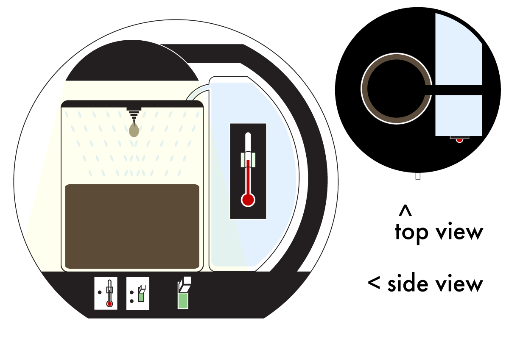
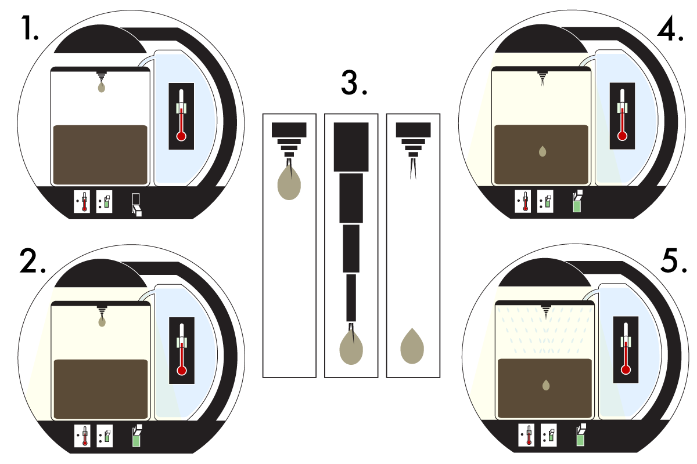
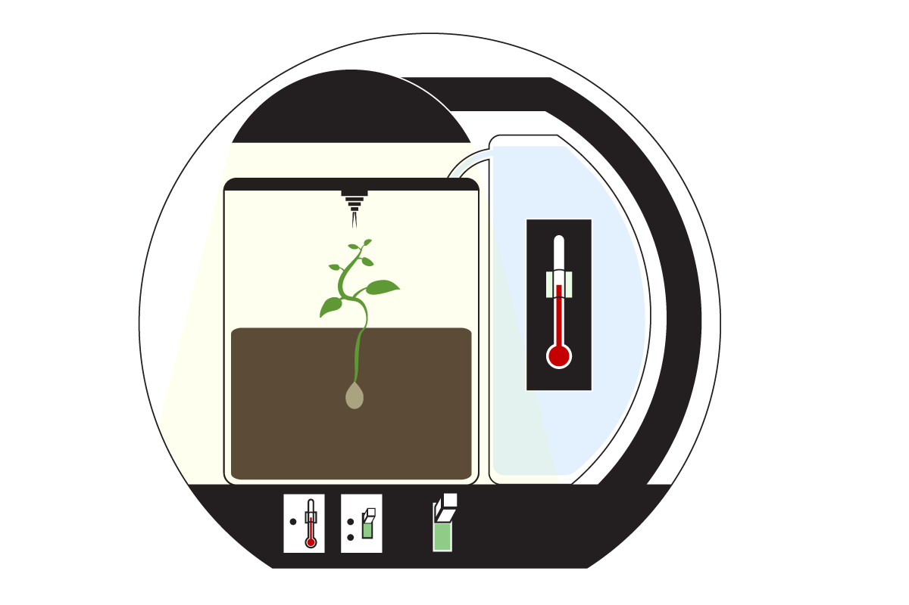

pr.1 >
> message for the aliens
Say what?
Our task: create a design that communicates a message to be sent out into space and hopefully intercepted and understood by inhabitants of another celestial body. We were inspired by creating a redesign of the Pioneer Plaque.



My thought process
My biggest issue with the Pioneer Plaque is how abstracted the message is presented. I had recently rewatched The Guardians of the Galaxy, and along with rediscovering the fantastic soundtrack, I considered the character Drak, and his comical inability to understand metaphors. I knew I wanted my "message to the aliens" to be as literal as possible.
Illustrator, February 2021